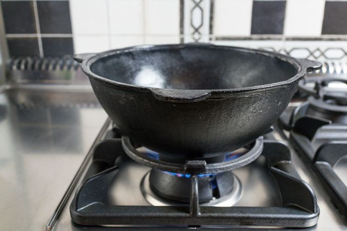

+38 (050) 029-13-70
+38 (072) 105-15-49
Узбекские чугунные казаны от 2 500 рублей
производство г. Наманган
Доставка по Луганску и области!
Наши казаны - правильные!
Чугун ГОСТ Р 52116 - 2003
Толстые стенки от 6 мм до 1,5 см
Чем больше размер - тем толще стенка. Чем толще стенка тем равномернее прогрев по всей площади
Гладкая шлифованная внутренняя поверхность
То, что отличает настоящий узбекский казан от других
Подходят для костра и плиты
В качественной чугунной посуде можно готовить как на открытом огне, так и на любых видах плит, включая индукционные.

Объёмы всегда в наличии
Объёмы с доставкой под заказ
Афганские казаны-скороварки
Афганские казаны появились не так давно и практически сразу стали пользоваться большим интересом. Очень популярны они среди охотников, путешественников, любителей пикников на природе, а также среди ценители вкусной и полезной еды. Блюда в афганском казане получаются томлеными, ароматными, а готовятся быстрее, так как эта кухонная утварь построена по принципу скороварки.
Чёрные
Двухцветные
Половники и шумовки
Правильному казану требуется правильный инструмент. У нас Вы можете приобрести высококачественные половники и шумовки из толстой нержавеющей стали с деревянными рукоятками и традиционным орнаментам.
Ляган
Эта посуда восхищает своей нереальной палитрой. Настоящая традиционная Риштанская посуда с применением техники ручной росписи. Такое блюдо украсит любой стол и порадует своего владельца шедевром ремесла Ферганской долины. Керамика, ручная авторская роспись.
Пчак
Традиционный Узбекский инструмент. Пчак режет за счет геометрии - практически плоские спуски и очень малый угол на РК, подводов и фасок вообще нет. Форма заточки лезвия (от обуха в ноль) позволяет не затачивать пчак, а править о донышко тарелки или керамической кружки. Можно о металлический мусат и он снова будет отлично резать. Широкая рукоять изготовлена из рога косули, гарда олово гравировка.
Печь-очаг
В нашем ассортименте представлены разные модели печей-очагов под любой казан. От простых и очень доступных вариантов печей без трубы и без заслонки из стали толщиной 2 мм, до печей с трубой-дымоходом, заслонкой и дверцей, за счет чего становится возможным регулировать температуру приготавливаемого Вами блюда не вынимая из печи дров. Труба съемная и имеет длину 1 м.
Отзывы наших клиентов
У меня был алюминиевый еще родительский казан для плиты - с плоским дном. Но в нем как-то всегда не очень получался плов - слипается в кашу. Я думал что рис не тот. Почитал потом умные книжки, оказалось, что далеко не все от риса зависит. Слипается из-за крахмала в рисе, а крахмал при высокой температуре должен распадаться. А в моем алюминиевом получается что греется хорошо только дно, а стенки не прогреваются - все равно что в кастрюле плов делать. Правильный казан должен по всему объему хорошо прогреваться. В итоге заказал здесь чугунный казан на 4,5 литра. Уже два раза в нем готовил - совсем другой коленкор! реально весь казан прогревается равномерно, потому что стенки толстые и материал - чугун. Плов получается гораздо лучше. Я очень доволен покупкой! Цена хорошая и доставили в тот же день!
Моему отцу на юбилей друзья задарили большой тандыр для дачи. У тандыра в комплекте шел переходник на горловину для казана. В этом году я решил подарить отцу казан - выбрал 12-ти литровый. Это наверное лучший подарок, который я делал отцу))) За этот сезон чего только в нем не готовили - и лагман и шурпу и плов, само собой, и просто картошку с грибами либо с мясом - это просто какая то фантастика. Я не знаю, как это объяснить, почему настолько вкусно в казане получается)) Больше всего меня впечатлил казан-кебаб - как говорят, шашлык в казане. Баранину маринованную в луке в разогретом казане прилепляешь к стенкам на жирную сторону, а лук из маринада обжариваешь в центре, потом мясо само тоже сползает в центр, там протушиваешь все - язык проглотишь просто!!! Я давно ничего вкуснее не ел! Теперь себе хочу свою дачу и свой казан))
Подарила мужу казан на день варенье, доволен как слон! Спасибо что так оперативно привезли мой заказ!
Оставляйте Ваши отзывы, пожелания и предложения!
Нам Важно любое мнение наших клиентов! Приятных покупок!
Чугунные казаны в Луганске